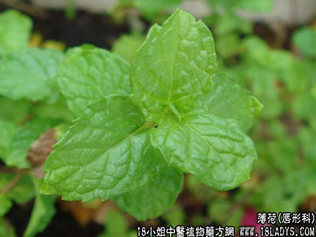

【中药概述】
薄荷为唇形科草本植物薄荷的地上部分。辛、凉。归肺、肝经。
1．疏散风热：用于风热感冒或温病初起而有发热、微恶寒、无汗或汗出不畅、头身痛等，如（清解汤）。
2．清热利咽：用于风热上犯的头痛、目赤，常配桑叶，菊花，黄芩等，如（桑菊饮）；咽喉肿痛，常配荆芥，僵蚕，桔梗等。如（<咽喉秘集>六味汤）。
3．祛风透疹：用于麻疹初起，隐隐不透，或将出之际，外感风邪，束闭不出等。常配荆芥，牛蒡子，蝉蜕等。
4．疏肝解郁：用于肝气郁滞所引起的胸闷胁痛。常配柴胡，白芍等。如（<普济方>薄荷汤）。
【药效鉴别】
薄荷疏散上焦风热而除表邪为风热外感、温病初起常用要药，善于清头目、利咽喉，又为治风热上扰，目赤、咽痛、鼻渊之良品；麻疹发于肌肤者。
薄荷善解肝郁①陈士铎：“薄荷，不特善解风邪，尤善解忧郁。用香附以解郁，不若用薄荷解郁之更神。薄荷入肝胆之经，善解半表半里之邪，较柴胡更为轻清。”(《本草新编》)②张锡纯
：“薄荷，若少用之，亦善调和内伤，治肝气胆火郁结作痛，或肝风内动，忽然痫痉瘈疭。”(《衷中参西录》)
【药理作用】
1．对中枢神经系统的作用：内服少量薄荷有兴奋中枢神经的作用，通过末稍神经使皮肤毛细血管扩张，促进汗腺分泌，增加散热，有发汗解热作用。薄荷油少量内服，同样有发汗、解热和中
枢兴奋作用。但也有报道，薄荷有中枢抑制作用。薄荷提取物1g／Kg皮下注射，对小鼠醋酸扭体反应的抑制率为30％～60％，其有效成分为薄荷醇。左旋薄荷酮也有较强镇痛作用。
2．局部作用：薄荷制剂局部应用可使皮肤粘膜的冷觉感受器产生冷觉反射，引起皮肤粘膜血管收缩；薄荷油对皮肤有刺激作用，并可慢慢渗透入皮肤内，引起长时间的充血。薄荷油外用能麻
醉神经末梢，具有清凉、消炎、止痛和止痒作用。薄荷油的主成分薄荷脑对皮肤有相似的作用。
3．解痉作用：薄荷及其有效成分均有解痉作用。薄荷的乙醇提取物对乙酰胆碱或组胺所致豚鼠离体回肠收缩有显著抑制作用。
另外，薄荷还有保肝、利胆、抗炎、抗菌、抗病毒等作用。
【应用与配伍】
1. 用于风热感冒，温病初起。本品苹以发散，凉以清热，清轻凉散，为疏散风热常用之品，故可用治风热感冒或温病初起，邪在卫分，头痛、发热、微恶风寒者，常配银花、连翘、牛蒡子、
荆芥等同用，如<银翘散>。
2. 用于头痛目赤，咽喉肿痛。本品轻扬升浮、芳咽喉。用治风热上攻，头痛目赤，多配合桑叶、菊花、蔓荆子等同用；用治风热壅盛，咽喉肿痛，常配桔梗、生甘草、僵蚕、荆芥、防风等同
用。
3. 用于麻疹不透，风疹瘙痒。本品质轻宣散，有疏散风热，宣毒透疹之功，用治风热柬表，麻疹不透，常配蝉蜕、荆芥、牛蒡子、紫草等，如透疹汤；治疗风疹瘙痒，可与苦参、白鲜皮、防
风等同用，取其祛风透疹止痒之效。
4. 用于肝郁气滞，胸闷胁痛。本品兼入肝经，能疏肝解郁，常配合柴胡、自芍，当归等疏肝理气调经之品，治疗肝郁气滞，胸胁胀痛，月经不调，如逍遥散。
此外，本品芳香辟秽，还可用治夏令感受暑湿秽浊之气，所致痧胀腹痛吐泻等症，常配藿香、佩兰、白扁豆等同用。
【化学成分】
茎、叶含挥发油，有薄荷香气，味辛辣清凉，油中主含l-薄荷醇（薄荷脑，l-menthol）约77％～87％，l-薄荷酮约10％，温度稍低时析出大量无色薄荷醇晶体。油中还含有异薄荷酮、胡薄荷
酮0.6％、D-月桂烯、柠檬烯、辛醇及微量的桉叶油精和α-松油醇等。
【用量用法】
3——10g，入煎剂宜后下。发散风热多用叶，理气舒肝多用梗。
【使用注意
本品芳香辛散，发汗耗气，故体虚多汗者，不宜使用。
【附】
1. 薄荷油为薄荷的新鲜茎和叶经水蒸汽蒸馏，再冷冻，部分脱脑加工得到的挥发油（亦称薄荷白油）。为无色或淡黄色的澄清液体；有特殊清凉香气，味初辛，后凉。存放日久渐变深。与乙
醇、氯仿或乙醚能任意混合。本品含酯量按醋酸薄荷酯计算，应为2％～6.5％；含总醇量按薄荷脑计算，不得少于50％。本品为芳香药、调味药及驱风药。口服一次0.02～0.2ml，一日0.06～
0.6ml。
2. 薄荷脑为薄荷油中得到的一种饱和的环状醇。为无色针状或棱柱状结晶或白色结晶性粉末；有薄荷的特异香气，味初灼热后清凉；乙醇溶液显中性反应。在乙醇、氯仿、乙醚、液状石蜡或
挥发油中极易溶解，在水中极微溶解。熔点42～44℃。比旋度为-49°～-50°。取本品2g，置称定重量的蒸发皿中，在水浴上加热，使缓缓挥散后，在105℃干燥至恒重，遗留残渣不得过1mg
。本品功效同薄荷油；用量0.02～0.1g。
3. 绿薄荷Mentha spicata L.（M.viridis L.），又名留兰香，原产欧洲，我国有大量栽培，所含挥发油的主成分为藏茴香酮（carvone），不含薄荷醇，油香气悦人，多用于牙膏与食品工业。